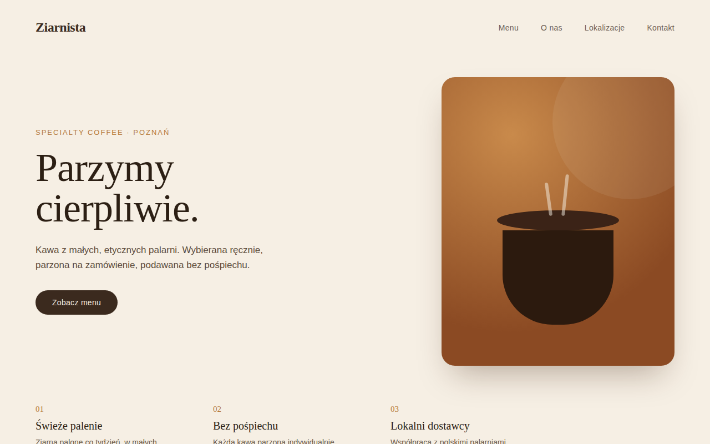
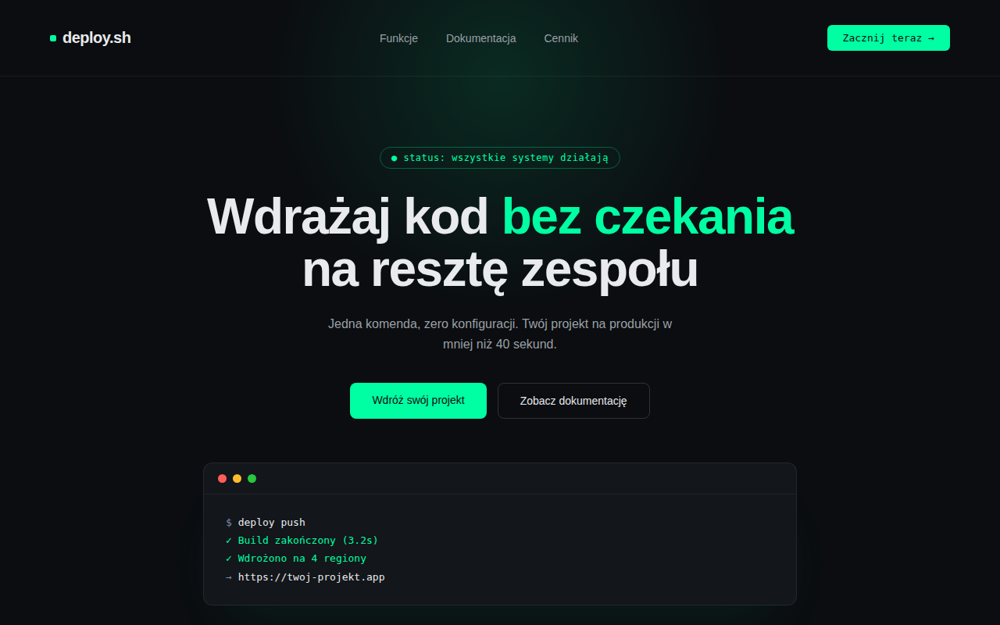

Kuba Potocki — tworzę strony
i uczę się jak to robić dobrze.
Studiuję informatykę na Collegium Da Vinci w Poznaniu. Interesuję się tworzeniem stron internetowych — od pierwszego makiety w Figmie do działającego kodu w przeglądarce.
O mnie
01Jestem studentem informatyki na Collegium Da Vinci. Najbardziej interesuje mnie front-end i to, jak dobry design przekłada się na działający kod — dlatego większość moich projektów to strony internetowe, które projektuję od zera i sam koduję.
Poniżej znajdziesz 3 projekty stron, które zrobiłem jako ćwiczenie — każdy w innym stylu wizualnym, żeby poćwiczyć różne podejścia do typografii, koloru i layoutu.
NARZĘDZIA I TECHNOLOGIE
Projekty
03
Ziarnista — kawiarnia
Strona dla fikcyjnej kawiarni specialty coffee. Ciepła paleta i krój Fraunces miały oddać spokojny, rzemieślniczy charakter marki.

deploy.sh — landing SaaS
Ciemny, techniczny landing page dla narzędzia developerskiego. Skupiłem się na kontraście i typografii w stylu terminala.

Hałas Studio — branding
Odważny, kolorowy landing dla studia kreatywnego. Ćwiczenie z dużej typografii i nietypowych kształtów w tle.